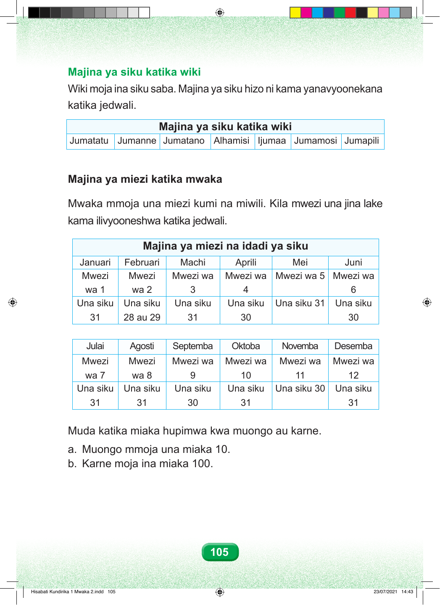

Majina ya siku katika wiki Wiki moja ina siku saba. Majina ya siku hizo ni kama yanavyoonekana katika jedwali. Majina ya siku katika wiki Jumatatu Jumanne Jumatano Alhamisi Ijumaa Jumamosi Jumapili Majina ya miezi katika mwaka Mwaka mmoja una miezi kumi na miwili. Kila mwezi una jina lake kama ilivyooneshwa katika jedwali. Majina ya miezi na idadi ya siku Januari Februari Machi Aprili Mei Juni Mwezi Mwezi Mwezi wa Mwezi wa Mwezi wa 5 Mwezi wa wa 1 wa 2 3 4 6 Una siku Una siku Una siku Una siku Una siku 31 Una siku 31 28 au 29 31 30 30 Julai Agosti Septemba Oktoba Novemba Desemba Mwezi Mwezi Mwezi wa Mwezi wa Mwezi wa Mwezi wa wa 7 wa 8 9 10 11 12 Una siku Una siku Una siku Una siku Una siku 30 Una siku 31 31 30 31 31 Muda katika miaka hupimwa kwa muongo au karne. a. Muongo mmoja una miaka 10. b. Karne moja ina miaka 100. 105 Hisabati Kundirika 1 Mwaka 2.indd 105 23/07/2021 14:43